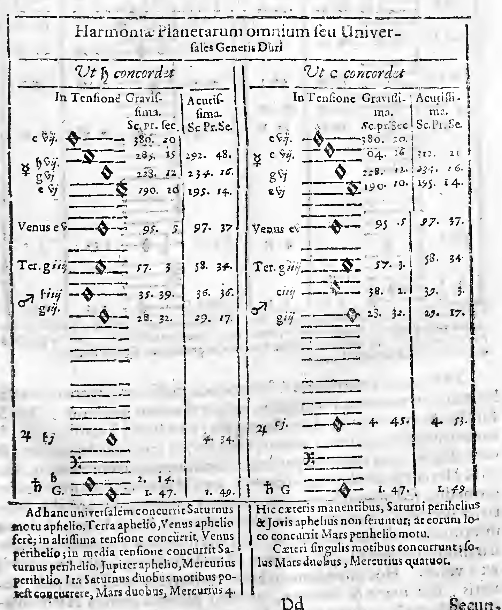
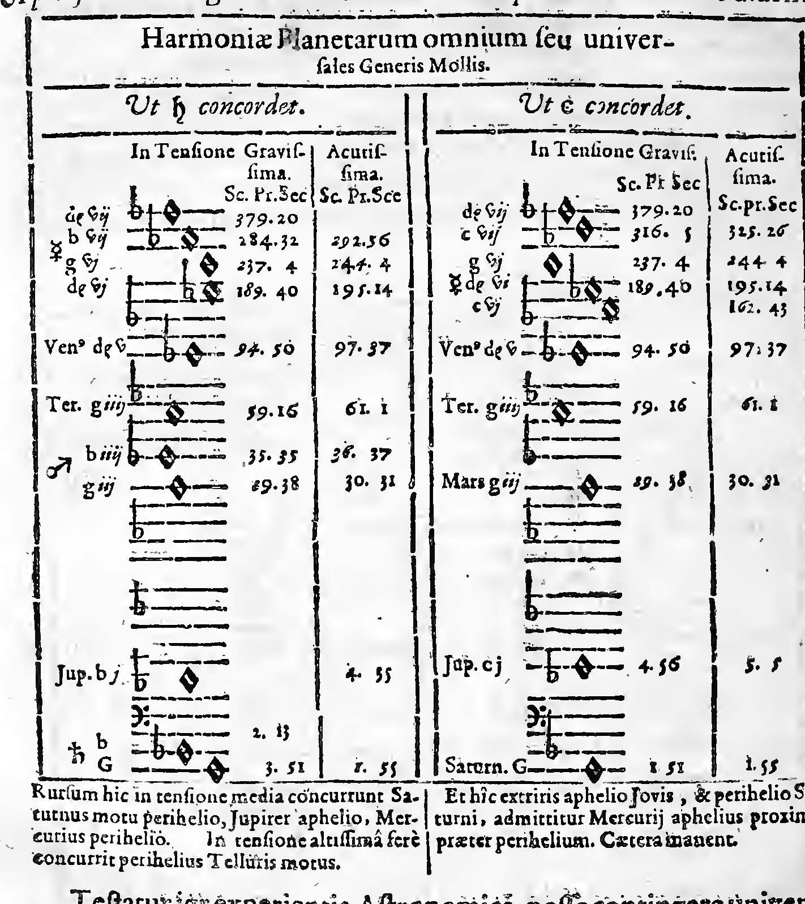

Chapter VII: The Four Universal Six-Planet Creation Chords¶
Chapter VII. That universal harmonies of all six Planets exist, as common four-voice counterpoints, in fourfold form.
Now, Urania, there is need of a mightier sound, as I ascend along the harmonic scale of the celestial motions to higher things, where
f. 0300 · p. 208the true archetype of the worldly edifice lies hidden and preserved. Follow me, modern musicians, and judge the matter by your arts, which were unknown to antiquity: to you in these latter ages, after an incubation of two thousand years, Nature—never other than lavish of herself— has at last brought forth the first genuine patterns of the universe; through your harmonies of varied voices, and through your ears, she has whispered herself, such as she exists in her innermost bosom, to the human mind, the most beloved daughter of God the Creator.
What harmonic proportions pairs of neighboring planets embrace by the extremes of their motions has been explained above. Yet it happens most rarely that two planets, especially the slowest, fall together into their extreme intervals: for example, the apsides of Saturn and Jupiter are distant by about 81 degrees; therefore meanwhile, while this distance between them measures out the whole Zodiac in fixed leaps of twenty years, eight hundred years glide by; nor even is the leap that closes the eighth century borne precisely to the very apsides; and if it strays a little further, another eight hundred years must be awaited, so that a more fortunate leap may be sought with good reason; and this must be repeated as many times as the measure of the aberration is contained in the length of half a single leap. The remaining pairs also form such periods, each of them, though not so drawn out. Meanwhile, however, other harmonies of two planets also occur between motions that are not both extreme, but intermediate—either one or both—and those, as it were, at different pitches. For because Saturn stretches from G to h and a little further, and Jupiter from b to d and more, these harmonies above the Octave (Diapason) can also occur between ♄ and ♃: both Thirds, and the Fourth (Diatessaron); either of the former across a stretch having the breadth of the other, and the latter across the breadth of a major Tone. For the Fourth will occur not only from Saturn’s G to Jupiter’s cc, but also from Saturn’s A to Jupiter’s dd, and through all the intermediate points between G and A of the former and cc and dd of the latter. The Octave and Fifth, however, occur only at the points of the apsides. Mars, having obtained a greater proper interval, has secured this: that it also forms the Octave with the outer planets across a considerable breadth of tension. Mercury has obtained so vast an interval that it generally forms all harmonies with all planets within one of its own periods, which is no longer than a space of three months. The Earth on the other hand, and Venus much more, by the narrowness of their own intervals, restrict their harmonies—not only with the rest, but especially with one another—to a remarkable paucity. But if three conspire into one harmony, many turns indeed must be awaited; yet the harmonies are many, so that they happen the more easily while each nearest one succeeds its neighbor; and triple harmonies appear to happen quite often between Mars, the Earth, and Mercury. Harmonies of four planets, however, now begin to be scattered across centuries; those of five planets across myriads of years. But that all six should agree together—that is hedged in by the longest spans of eternity, and I know not whether it is altogether impossible for it to happen twice through exact revolution, and whether it does not rather point to some beginning of Time, from which the whole age of the world has flowed down.
But if a single sixfold harmony alone could happen, or
Marginal Note (fol. 0300, p. 208)
Shall I be committing a crime if I demand from every composer of this age an artful Motet for this eulogy? The Royal Psalmist and the other sacred books will be able to supply a fitting text. Yet listen, you musicians: in heaven no more than six agree together; for the Moon sings her monody apart, sitting by the Earth as by a cradle. Bring your contributions, so that a book may be made in six parts; I promise myself as a diligent curator. To him who most closely expresses the celestial music described in this work, Clio pledges a garland, and Urania pledges her Venus.
The mark of the beginning of the World.
one remarkable harmony among many, that without doubt could be taken for the mark of Creation. We must ask, therefore, whether—and in how many forms altogether—the motions of all six planets can be reduced into one common harmony? The method of inquiry is this: that we begin from the Earth and Venus, because these two make no more than two consonances, and—which holds the reason for this—through the shortest stretches of motion.
Come then, let us set up two skeletons, as it were, of Harmonies, each bounded by a pair of numbers (by which the limits of pitch are marked), and let us search out what agrees with them from the variety of motions granted to each Planet. Let the first skeleton have between the Earth and Venus 3, 5; and in the lowest pitch the aphelial diurnal motion of the Earth, 57′ 3″; in the highest, the perihelial of Venus, 97′ 37″; therefore the rest will be as follows:




That ♮ may concord: To this universal harmony Saturn concurs with its aphelial motion, Earth with its aphelial, Venus nearly with its aphelial; at the highest pitch Venus concurs with its perihelial; at the middle pitch Saturn concurs with its perihelial, Jupiter with its aphelial, Mercury with its perihelial. Thus Saturn can concur with two motions, Mars with two, Mercury with four.
That c may concord: Here, while the rest remain, Saturn’s perihelial and Jupiter’s aphelial motions are not borne; but in their place Mars concurs with its perihelial motion. The rest concur with single motions; Mars alone with two, Mercury with four.
f. 0302 · p. 210The second skeleton, therefore, will be that in which between the Earth and ♀ there is the other possible harmony, 5 : 8. Where of ♀’s aphelial diurnal motion, 94′ 50″, the eighth part, 11′ 51″+, taken five times, occupies 59′ 16″ of the Earth’s motion; and of ♀’s perihelial motion, 97′ 37″, a similar part occupies 61′ 1″ of the Earth’s motion. The remaining Planets, therefore, concord with the following diurnal motions.
Universal Harmonies of all the Planets, of the Soft Genus (Genus Molle) — That b may concord: Again, at the middle pitch Saturn concurs with its perihelial motion, Jupiter with its aphelial, and Mercury with its perihelial. At the highest pitch the Earth’s perihelial motion nearly concurs.
That c may concord: And here, with Jupiter’s aphelial and Saturn’s perihelial motions excluded, Mercury’s aphelial motion—nearest to its perihelial—is admitted. The rest remain.
Astronomical experience therefore testifies that universal harmonies of all the motions can happen, and those of two kinds, Hard (Durum) and Soft (Molle); and in either kind, of a twofold form or (if so we may say) Tone; and in any one of the four cases, with some latitude of pitch, and also with some variety in the particular harmonies of Saturn, Mars, and Mercury, each with the rest: nor is this achieved by intermediate motions alone, but altogether by all the extremes, except the aphelial motion of Mars and the perihelial of Jupiter; because since the former holds fe and the latter d, Venus—holding the intermediate de or e perpetually—does not tolerate those dissonant neighbors of hers in a universal harmony, which she would do if she had obtained room to step out from e or de. This hindrance belongs to this marriage of the Earth and Venus, as of husband and wife, which two planets distinguish the kinds of Harmonies into hard and masculine, and soft and feminine:
f. 0303 · p. 211according as the one spouse has indulged the other: namely, whether the Earth is at its aphelion, as if guarding marital dignity and pressing works worthy of a man, with Venus thrust aside to her perihelion as if to the distaff; or whether he has gently admitted her as she ascends to her aphelion, and the Earth himself has descended toward his perihelion to meet ♀, and as it were into her embraces, for pleasure’s sake, laying aside for a little while his shield and arms, and works befitting a man: for then the Harmony is soft.
But if we bid this gainsayer ♀ to keep silent—that is, if we consider what harmonies there can be, not of all, but at least of the five remaining Planets, excluding the motion of ♀—even then indeed
Harmonies of five Planets, Venus being passed over — Of the Hard Genus (Genus Durum): At the lowest pitch Saturn and Earth concur at their aphelia; at the middle pitch Saturn at perihelion, Jupiter at aphelion; at the highest, Jupiter at perihelion.
Of the Soft Genus (Genus Molle): Here Jupiter’s aphelion is not tolerated, but at the highest pitch Saturn concurs very nearly at perihelion.
the Earth wanders on its own string g, nor does it ascend from it beyond a semitone; therefore b, ♮, c, d, de, e can agree with g: where Jupiter, as you see, marking the string d in perihelial motion, is admitted; there remains, then, the difficulty concerning Mars’s aphelion. For the Earth’s aphelion, holding g, does not bear Mars on fe; while its perihelion, as was said above in Chapter V, shrinks from agreement with Mars’s aphelion by about half a Diesis.
f. 0304 · p. 212Of four Planets, however—Saturn, Jupiter, Mars, and Mercury—this Harmony can also exist, in which Mars’s aphelion is present, but it is without latitude of pitch.
Harmony of four Planets (Saturn, Jupiter, Mars, Mercury): That ♮ may concord / That a may concord.
Nothing else, therefore, are the motions of the heavens than a certain perpetual concert (rational, not vocal) tending through dissonant tensions—like certain syncopations or cadences (by which men imitate those natural dissonances)— toward fixed and prescribed cadences, each of six terms (as it were of Voices), and by those notes marking and distinguishing the immensity of Time; so that it is no longer a wonder that at last Man, the Ape of his Creator, has discovered the art of singing in polyphonic concert, unknown to the ancients—namely, so that he might play out the perpetuity of all worldly Time within some brief fraction of an Hour through an artful symphony of many voices, and in some measure taste the complacency of God the Maker in His own works, through a most sweet sense of delight perceived from this Music, the imitator of God.